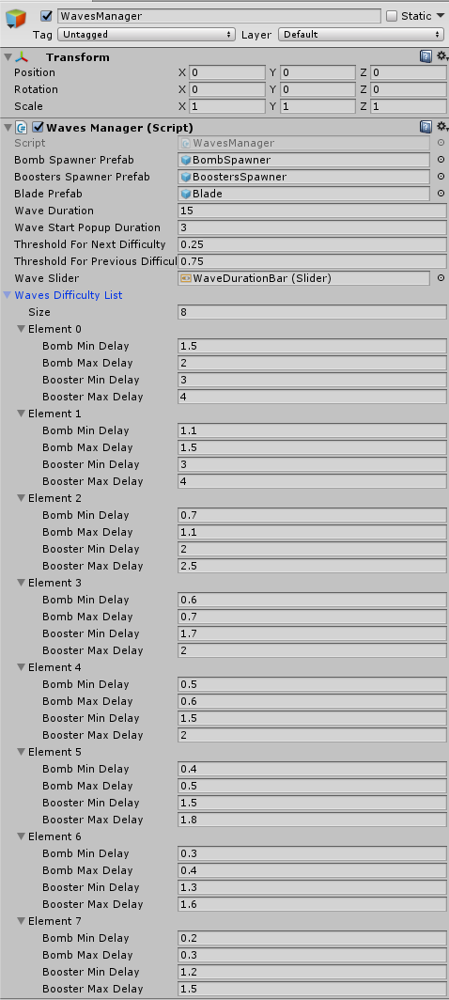
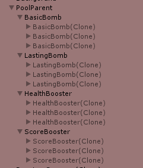

City Defense
Intro
CityDefense is a hyper-casual game. Its mechanics are easy to understand and use. Waves of attacks threaten your city and your job is to defend it by slashing at the bombs.
structure
Waves logic
The GameManager manages the WavesManager and the WavesManager manages as is expected - the waves.
Every wave has its own level of difficulty that influences both the BombSpawner and the BoostersSpawner.
Both these spawners are updated and managed by the WavesManager.
The WavesManager also manages the countdown time of the current wave and holds the logic to determine the difficulty of the next wave.

Pooling
In our game we are spawning bombs and boosters every wave, all the time.
We improve performance and memory use by reusing objects from a fixed pool instead of allocating and freeing them individually.
When the game starts, we insert into our pool several objects per type, and we use and re-use them. You can play the game for hours and still be using only 6 bombs and 6 boosters total!
In addition to the standard implementation of pooling, I've added the ability to use an object from the pool for a limited amount of time and to return all the objects of a certain type at once.
This image shows the pool at the start of the game in the game hierarchy:

Popups
I've implemented a basic PopupsManager that holds a reference to a Popups Canvas. It contains the common background of a popup and all the popups are disabled. Popups can show from anywhere in the game by the PopupsManager - enable it or if another popup is currently showing, added to a queue. When showing a popup, we can tell the PopupsManager if it has an auto-closing timeout. Once a popup is closed - if by actively closing it or by the auto-close, the PopupsManager checks whether to disable the popup's common background or show the next popup. Since the game doesn't have many popups, and they don't need to be changed dynamically, we can afford to hold them all under the Popups Canvas. In more complicated games we'd also be loading/unloading the popups and managing the preloader in between.
Events and decoupling
Creating code that is scalable and clear to understand, where every area of code is responsible only for itself and doesn't control others is a hard task. It demands planning the code structure ahead of time and not just "making it work" on the fly. To follow this basic code philosophy I've used an EventManager to pass events and data between areas of code. Anyone who cares for a certain event will listen to it and handle it according to a predefined protocol structure of the event's data. For example: Blade hits a bomb -> Triggers a hit event -> Bomb handles the event and creates a sliced animation. -> Triggers an award event -> GameManager updates the user's score.